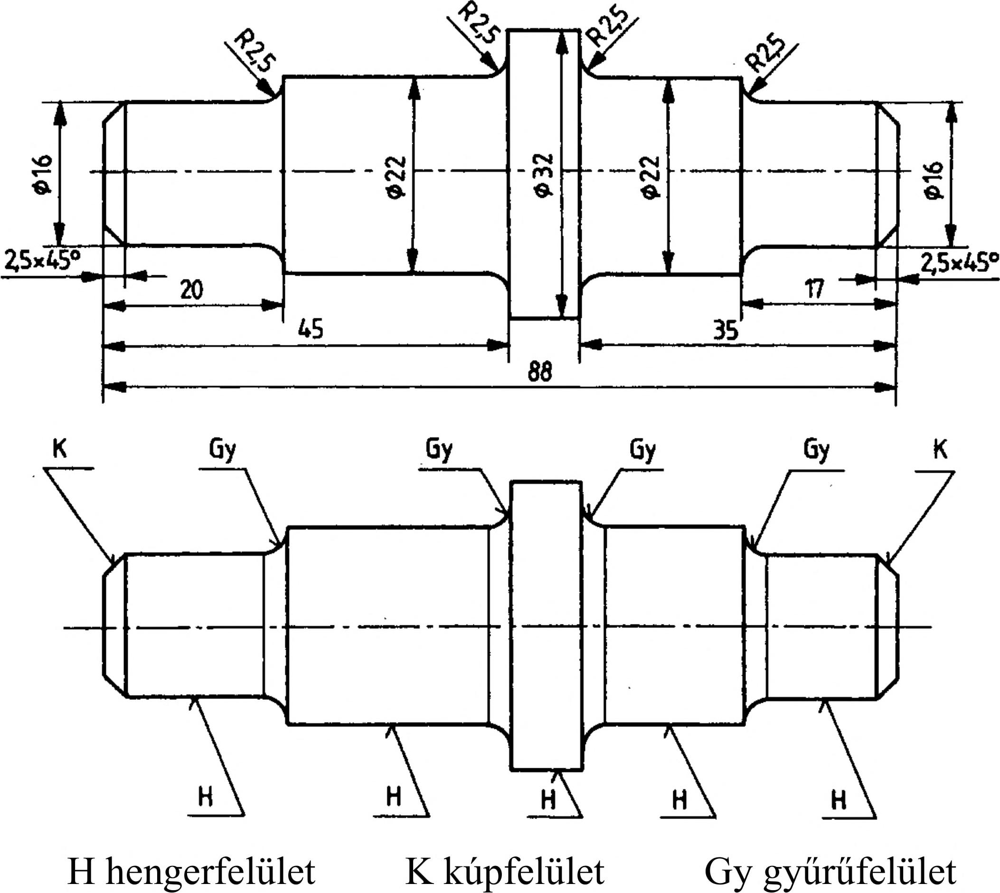

5. Ipari formák nézeti ábrázolása 5.1.1. Felületelemzés Gyakorlati tevékenységünk során - amikor munkadarabot kell készítenünk vetületi rajzai alapján - nélkülözhetetlen, hogy gondolatban a bonyolultnak tűnő ipari formát szétbontsuk építőelemeire, hogy megvizsgáljuk egyes felületeit és a felületek által takart idomokat. Szükséges ezt elvégeznünk elsősorban azért, hogy a vetületi rajzok elvontságát feloldva, a magunk számára elképzelhető legyen a munkadarab, annak egyes felületeit és idomdarabjait el tudjuk különíteni egymástól, mivel eltérő megmunkálási technológiát alkalmazunk a felületek elkészítése során. Az elkészítendő munkadarabokat rendszerint egyszerű vagy összetett sík és görbe felületek határolják. A sík vagy görbe felületekkel határolt formák rendszerint lebonthatók egyszerű geometriai felületekre, ill. felületekkel lehatárolt testekre, ún. építőidomokra. Az építőidomok felületeinek határolása lehet: - vetítési síkba eső határolóvonal (kontúr) és jól felismerhető, éles metsződés, látható él (a vetületi rajzon A típusú, vastag folytonos vonallal rajzoljuk meg), - gömbölyített vagy tompított, nem éles metsződés (a vetületi rajzon B típusú, vékony folytonos ún. tagoló vonallal rajzoljuk meg, és nem éri el a kontúrt), - sima átmenetű csatlakozás, pl. közös tengelyű gyűrűfelület és henger vagy kúpfelület törésmentes csatlakozása, vagy az egymásra merőleges felületek közötti hengerszalagnak az érintősíkhoz való csatlakozása. (Ezt a csatlakozást a géprajz nem jelöli.) A 99. ábra tengely vetületi rajzát mutatja, majd az ábra kiegészítéseként tartalmazza azt a felületelemzést , amit forgácsolt alkatrészek készítése során minden szakembernek el kell végeznie. A felületelemek típusát (sík, henger, kúp, gyűrű) rajzainkon jelölhetjük: - színessel, - betűjelzéssel, - eltérő felületi vonalkázással. 5.1.2. Idomelemzés Az idomelemzés a tárgy alakját meghatározó építőelemek felismerését és különválasztását jelenti. A 100. ábrán két alkatrészből (7 furatos lemez; 2 szár) összeállított egyszerű szerkezetet láthatunk a) hegesztési kötés elkészítéséhez beállított helyzetben, b) a szerkezetet felépítő idomok legyártás utáni különválasztásával. Vizsgáljuk meg a rajzi feldolgozás lépéseit : 1 . Adott a gépalkatrész méreteivel. 2. Szétbontjuk képzeletben, megvizsgáljuk felületeit és építőidomait. 3. Felépítjük az elemekből a kész formát. 4. Megszerkesztjük vetületeit. 5. Elkészítjük a méretmegadást (100. ábra). 99. ábra 1 2 100. ábra 28
